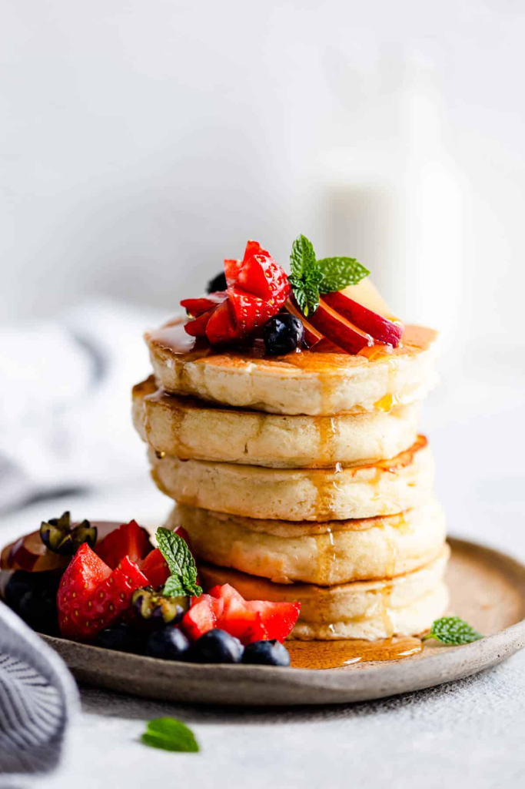

Fluffy Pancakes

Best fluffy pancakes
Classic fluffy pancakes are everyone's favourite, especially as a weekend breakfast or brunch. These American- style pancakes have wonderful, light and fluffy texture and can be served with your favourite toppings!
Recipe creditIngredients
- 2 cups all purpose flour
- 1/4 cup granulated sugar
- 4 teaspoons baking powder
- 1/4 teaspoon baking soda
- 1/2 teaspoon salt
- 1 3/4 cups milk
- 1/4 cup butter
- 2 teaspoons pure vanilla extract
- 1 large egg
Steps
- Combine together the flour, sugar (or sweetener), baking powder, baking soda and salt in a large-sized bowl. Make a well in the centre and add the milk, slightly cooled melted butter, vanilla and egg.
- Use a wire whisk to whisk the wet ingredients together first before slowly folding them into the dry ingredients. Mix together until smooth (there may be a couple of lumps but that's okay).
- Set the batter aside and allow to rest while heating up your pan or griddle
- Heat a nonstick pan or griddle over low-medium heat and wipe over with a little butter to lightly grease pan. Pour ¼ cup of batter onto the pan and spread out gently into a round shape with the back of your ladle or measuring cup.
- When the underside is golden and bubbles begin to appear on the surface, flip with a spatula and cook until golden. Repeat with remaining batter.
- Serve with honey, maple syrup, fruit, ice cream or frozen yoghurt, or enjoy plain!